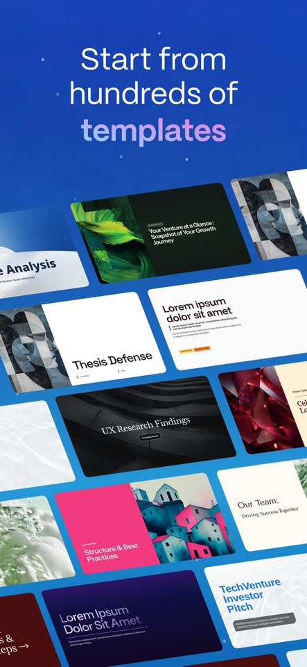

Gamma 到底值不值得掏钱？一份按月度重算的付费决策账本
我把 Gamma 的免费版和 Pro 版每个功能的实际使用频率、能省的时间、替代方案成本全部拉出来算一遍，帮你三秒决定要不要开年卡。
先抛问题：它到底值不值得掏钱？
我试用 Gamma 三个月，从"天天打开"到"每周打开一次"，态度经历了一百八十度转弯。写这篇的时候我已经取消了免费试用的自动续费，不是它不好用——是我搞清楚了：这个产品的付费价值高度绑定你的使用场景，用错了，就是白扔钱。
所以这篇不是评测，是账本。我把每个付费功能的实际价值拆成时间账，按轻度、主力、重度三种使用强度分别算，最后给一个能直接对号入座的结论。
先把产品是什么说清楚
Gamma 是一个 AI 驱动的三合一内容生成工具，它的官网上能看到完整的功能介绍和最新版本迭代——一份稿子可以同时导出成演示文稿、文档和网站。底层逻辑是把内容当成一堆可伸缩的"卡片"：内容多了卡片自动变长，少了自动缩短，版式不会崩。这个设计让它在三种形态之间切换几乎零成本，也是它和传统 PPT、Notion、Carrd 最大的区别。
定价拆解：免费版给什么，付费版多什么
官方定价我按我能查到的最新版整理，安装包从官方下载拿就行——版本和功能边界可能会变，但账算法不变，你自己套进去就行。
免费版的核心限制是：
- AI 积分每月约 400 次（包括生成页面、生图、改图所有 AI 操作）；
- 单个文件导出 PDF/PPTX 有水印，且部分高级导出格式锁死；
- 页眉页脚不能自定义；
- AI 生图不支持风格关键词和风格参考图，每次从零描述——想了解每个版本的具体功能边界，可以去看gamma文档；
- 发布网站带宽和访问量有限制。
Pro 版（约每月 12 美元，年付有折扣）解锁的东西：
- AI 积分提到每月 12000 次，是免费版的 30 倍；
- 导出无水印，PPTX 里的表格保持可编辑；
- 页眉页脚品牌自定义；
- AI 生图全套能力开放：风格关键词锁定、风格参考图续风格、重绘不重复扣积分；
- 高级图表（信息图、AI 流程图）全部可用；
- 发布网站带宽和自定义域名。
团队版（约每月 24 美元/席位）在 Pro 基础上加了协作、审计、SSO，个人用户完全不用看。
这里有个定价细节挺鸡贼的：AI 积分是混合池，生成页面和生图共用。如果你大量用 AI 生图，积分消耗速度是写页面的 3 到 5 倍——免费版 400 次积分，纯生图的话一周就能耗完，纯写页面能撑两到三周。Pro 版 12000 次看上去很多，但重度生图用户每月也会顶到上限，超出部分要额外买积分包。
分三类人算账
轻度用户：每月用 1~3 次，每次 20 分钟
典型场景：偶尔要做个汇报提纲、写个一次性的小文档、出个单页网站当活动落地页。
免费版够不够？完全够。 400 次积分每月按你的使用频率根本用不完，导出带水印的 PPTX 也只在正式场合尴尬——内部汇报直接无视水印，对外发的话用免费版导出 PDF 截图再贴进去也能糊弄过去。页眉页脚用不到，风格关键词这种高级生图功能你大概率也没动力学。
付费后的时间账： Pro 版 12 美元/月，你每次多花 20 秒删水印、2 分钟手动调页眉（假设你确实用到了），每次省 2 分钟。3 次就是 6 分钟。你每分钟时间值 2 美元以上吗？ 显然不值。
结论：免费版躺平。
主力用户：每周 3~5 次，每次 1 小时
典型场景：咨询顾问、产品经理、独立开发者——每周要出 1~2 份演示稿，偶尔还要把同一份内容发布成网站给客户看。
免费版够不够？看你用不用 AI 生图。 如果只用 AI 生成页面结构和文字，400 次积分撑一周是够的（生成一页约 15~20 次）；但如果你要配 AI 图，一张图就要 30~50 次积分，一份 10 页的稿子配 5 张图，积分直接炸。而且免费版生图不能锁风格，同一份稿子的图画风乱跳，出来像拼凑的。
付费后的时间账： Pro 版省的是三块：积分不再焦虑（不用数着次数用）、生图风格统一（不用每张从零写提示词）、导出无水印（不用事后擦屁股）。保守估计每周省 20~30 分钟，每月 1.5~2 小时。12 美元换 2 小时，你的时间时薪在 6 美元以上就回本——这几乎覆盖了所有有收入的主力用户。
但这里有个隐形成本：Gamma 的核心效率来自 AI，AI 的天花板限制了它的上限。它生成的页面结构是"看起来像那么回事"，但细节打磨（对齐、间距、字重）你还是要手动调。如果你追求像素级完美，Gamma 帮不了你——你迟早会回到 Figma 或 Keynote。

重度用户：每天打开，每次 2 小时以上
典型场景：用 Gamma 做公司官网站点、批量出内容营销素材、把它当主要写作工具的独立创作者。
免费版够不够？完全不够。 400 次积分撑不到一天，AI 生图完全没法用，发布网站的访问量限制会卡死你。
付费后的时间账： Pro 版 12000 次积分看上去够用，但重度生图用户每月会超。这时候你有两个选择：买积分包（价格不便宜）、或者降低 AI 生图频率。更关键的是，Gamma 不是为重度生产设计的——它的内容模型是"快速出稿"，不是"精细打磨"。当你需要 100+ 页的长文档、需要复杂的数据联动图表、需要精细控制每一个像素，Gamma 的卡片模型会让你越来越憋屈。
结论：Pro 版可以用，但别把它当主力工具——它适合做初稿，后期还是要转成 Keynote/Figma/Notion 精修。如果你真的重度依赖 AI 生图，不如把 Pro 的钱拿去订阅 Midjourney + 一个专业排版工具，组合拳比 Gamma 一家包打天下更强。
替代方案：不付这笔钱有什么别的路
场景一：你主要做演示文稿
别想了，免费版 Gamma 已经比 PowerPoint 的 AI 功能好用十倍。但如果你只是偶尔做 PPT，Google Slides 的 AI 功能（Workspace 付费用户）也能凑合用，或者干脆用 Canva 的免费版——模板更多，导出完全免费。
场景二：你主要做文档
Notion 的 AI 功能（Plus 版 8 美元/月）更成熟，双向链接和数据库能力是 Gamma 永远比不了的。如果你已经是 Notion 用户，不要为了 Gamma 再开一份订阅。
场景三：你主要做单页网站
Carrd 免费版可以做 3 个站，每个站 3 页以内，够用。如果要做完整网站，Vercel + Next.js 或者 Hugo + GitHub Pages 都是免费方案，虽然门槛高一点，但自由度远超 Gamma 的网站发布功能。
场景四：你主要用 AI 生图
Midjourney 标准版 10 美元/月，稳定出图、风格统一、社区素材多。DALL·E 3 集成在 Bing 和 ChatGPT Plus 里，20 美元/月还能顺便用 GPT-4。单独为了 AI 生图买 Gamma Pro 是最亏的选择——它的生图能力和专业生图工具不在一个量级。
最后给结论：三秒对号入座
| 你的使用强度 | 推荐方案 | 核心理由 |
|---|---|---|
| 每月 1~3 次，每次 20 分钟 | 免费版 | 积分用不完，导出水印可绕，不值得花 12 美元 |
| 每周 3~5 次，每次 1 小时 | Pro 版年付 | 每月省 1.5~2 小时，时薪 6 美元以上回本；年付有折扣更划算 |
| 每天打开，每次 2 小时+ | Pro 版当初稿工具 + 专业工具精修 | Gamma 的上限挡不住重度需求，别幻想它一家通吃 |
| 主要为了 AI 生图 | 别买 | Midjourney/DALL·E 3 专业能力碾压，Gamma 生图只是附赠功能 |
最后说一句掏心窝的：我取消 Pro 的原因不是它不值，是我发现自己的使用场景已经从"快速出稿"变成了"精细打磨"——Gamma 在那条路上帮不到我，留着订阅就是沉没成本。工具没有好坏，只有合不合身。 趁试用期还没结束，老老实实算一遍你每周打开的次数、每次花的时间、具体用了哪些付费功能——算完账，决策自己就出来了。如果你还想再多研究研究 Gamma 某几个功能的深层用法，或者买之前想看看实际案例长什么样，我的资料在三个仓库都放了一份：GitHub 是主仓库，Gitee 和 GitCode 是国内镜像，访问慢的时候换着用就行。